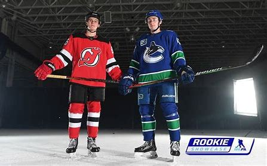

The National Hockey League (NHL) has become more talent filled every season with emerging stars. While every player in the NHL is great and full of talent I wanted to focus on analyzing the best of the best. As a hockey player myself and advid fan of the NHL the following information provided will be who I believe are the top NHL players from the previous 2023-2024 season. The new generation of talent and along with skill has made the game so much faster each year, the players I've selected are the best of the best. (Side note goalies won't be included in this ranking.)

Sidney Crosby is one of the most well known names when it comes to hockey and there's a reason for that. Drafted first overall by the Pittsburgh Penguins in 2005 and he's never looked back since. In the 2023-2024 season he continued his consistent play at an elite level posting 94 points. While he is getting into the later years of his career, he's been nothing short of spectacular every season. A true veteran of the league, he's one of the most decorated hockey players when it comes to accolades as well. The current captain of the Pittsburgh Penguins has three stanley cups to his name along with multiple IIHF gold medals for his home country Canada. While he may be old, his ever-lasting impact on the game and in the NHL is hall of fame level.
Crosby's CareerJack Hughes had another big year after his breakout season in 2022-2023, once again flushing away any doubters about his ability. In 2023-2024 Hughes put up 74 points even with an injury at the beginning of the season. His skating ability combined with playmaking and skill makes him one of the most fun to watch in the league. While he's only 23 years old, the future is so bright for the 1st overall pick of the 2019 draft. Hughes alone has brought New Jersey many fans because of his superstar skill that even haters finally have realized he has. It's also worth noting that he has two brothers in the league as well who are just as crafty as himself.
J. Hughes' CareerMatthew Tkachuk and his leadership combined with his skill and ability as a power foward successfully lead the Panthers to a Stanley Cup this past season. When you think of a clutch player in important games, you think Matthew Tkachuk. Everything about him is to love as a teammate, meanwhile for the opposition you hate to play him. Matthew Tkachuk is so underated because he isn't your typical superstar, he isn't afraid to be gritty and use his big frame to his advantage. Coupled with his big frame, the 26 year old has some of the best hands in the entire league. The face of FLorida's franchise has earned everything so far in his career and lived up well to his last name Tkachuk.
Tkachuk's CareerQuinn Hughes is an elite talent and was named captain right before the 2023-2024 season. Yes, the name Hughes is familiar. This is Jack's brother who's two years older and every bit as much as a star as his brother. Quinn Hughes on the backend controls the game so well and is one of the best passers in the league. Like his brother, his raw skill to make plays and skate effortlessly is what makes his game so special. The future in Vancover is so bright with Hughes leading the charge.
Q. Hughes' Career 